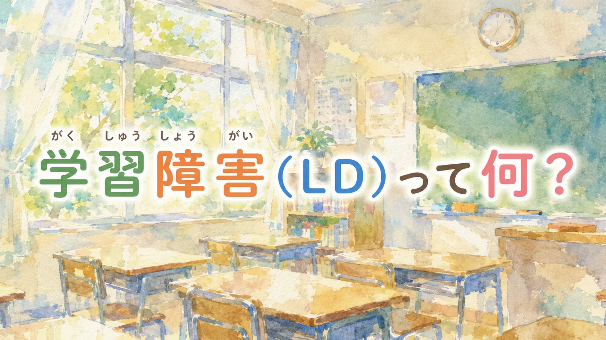

📖 知っておくと読みやすくなる言葉
- LD・学習症（がくしゅうしょう）
- → 知的な遅れはないが、読む・書く・計算するなど特定のことが極端に難しい状態
- ディスレクシア
- → 文字を読むことに特有の難しさがある状態（LDの代表的なタイプ）
- 合理的配慮（ごうりてきはいりょ）
- → その子に合わせたサポート（タブレット使用・試験時間延長など）
- 特異的学習症（とくいてきがくしゅうしょう）
- → LDのDSM-5における正式な診断名
「読むのが遅い」「字がうまく書けない」「計算だけが極端にできない」――そんな子を「努力が足りない」「やる気がない」と見てしまうことがあります。でも、学習障害（LD）は知能の問題ではありません。普通、あるいはそれ以上の知的能力を持ちながら、特定の学習だけが著しく困難な脳の特性です。
LDって何？
LD（Learning Disorder / Learning Disability）は、DSM-5では「限局性学習症（Specific Learning Disorder: SLD）」と呼ばれます。
「全般的な知的発達に遅れはないが、聞く、話す、読む、書く、計算する又は推論する能力のうち特定の能力の習得と使用に著しい困難を示す」（1999年）
つまり、知的能力全体の問題ではなく、特定の学習領域に著しい困難が出る状態です。DSM-5以降の診断では、知的能力だけで機械的に判断するのではなく、学習上の困難の持続性や生活・学校での影響を総合して見ます。割合は調査や定義によって幅があるため、この記事では「読み・書き・計算のどこで困っているか」を具体的に整理することを重視します。
3つのタイプ
1. ディスレクシア（読字障害）
文字を読むことへの著しい困難。文字と音の対応（音韻処理）がうまくいかないことが主な原因とされています。
- ひらがなをスムーズに読めない
- 漢字の読みが覚えられない
- 読むのがとても遅い・疲れる
- 読むのに非常に労力がかかり疲れやすい
視力の問題ではありません。音と文字のつながりを処理する脳の経路の特性です。
2. ディスグラフィア（書字障害）
文字を書くことへの著しい困難。文字の形を記憶・再現する処理や、思考を文字化するプロセスの特性です。
- 字形が整わない・線が乱れる
- 漢字の書き方が覚えられない
- マス目に字を収めることが難しい
- 書きながら考えることが難しい
3. ディスカリキュリア（算数障害）
数・計算・数学的推論への著しい困難。数の大小感覚（数量感）の弱さが根本にあるとされています。
- 数の大小がわからない
- 足し算・引き算のくり上がり・くり下がりが難しい
- 数学的な概念の理解が難しい
- 時計が読めない・お金の計算が苦手
「頭が悪い」ではない根拠
LDの定義そのものが「知的障害ではない」ことを前提にしています。国語の文章問題は得意なのに漢字の書き取りだけができない、理科や社会の内容は深く理解しているのに算数の筆算だけが極端に遅いなど、能力の「凸凹（でこぼこ）」がLDの特徴です。
「やればできるはず」「もっと練習すれば」という声かけは、LDの子にとって大きな苦痛になります。100回書いても覚えられない、声に出して読んでも頭に入らない――それは脳の特性によるものであり、努力の量で解決できない困難です。
ICTが強力な味方になる
LDの子にとって、デジタルツールは大きな助けになります。
- 読み上げソフト：文章を音声で聞く（読字の困難をカバー）
- 音声入力：話した内容を文字にする（書字の困難をカバー）
- 電卓・計算ソフト：計算の困難をカバーして思考に集中する
- デジタル教科書：文字の大きさ・色を変えて読みやすくする
「ずるい」ではなく、「眼鏡をかけるのと同じ」という捉え方が広まりつつあります。
支援のポイント
- 苦手な方法を強要しない：漢字ドリルより音声・デジタルでの学習を取り入れる
- 得意な方法で補う：読むのが苦手なら聞いて学ぶ、書くのが苦手ならタイピング
- 合理的配慮を求める：テスト時の時間延長・ICT使用などを学校に相談する
- 専門機関に相談する：発達障害者支援センター・児童精神科・通級指導教室
正式な診断がなくても、困難を抱えているお子さんには支援が届くべきです。「グレーゾーン」と呼ばれる状態でも、学校・療育・相談窓口に相談することができます。診断は支援を受けるための唯一の条件ではありません。
📌 この記事を使うヒント
読み書きの困難は「練習不足」ではありません。この記事を担任に渡して、テストや宿題・板書の配慮について話し合うきっかけにしてください。
まなびの森教育研究所では、家庭でできる発達支援の実践ツールを提供しています。
「得意・苦手発見シート」など、お子さんの特性を整理するヒントになります。